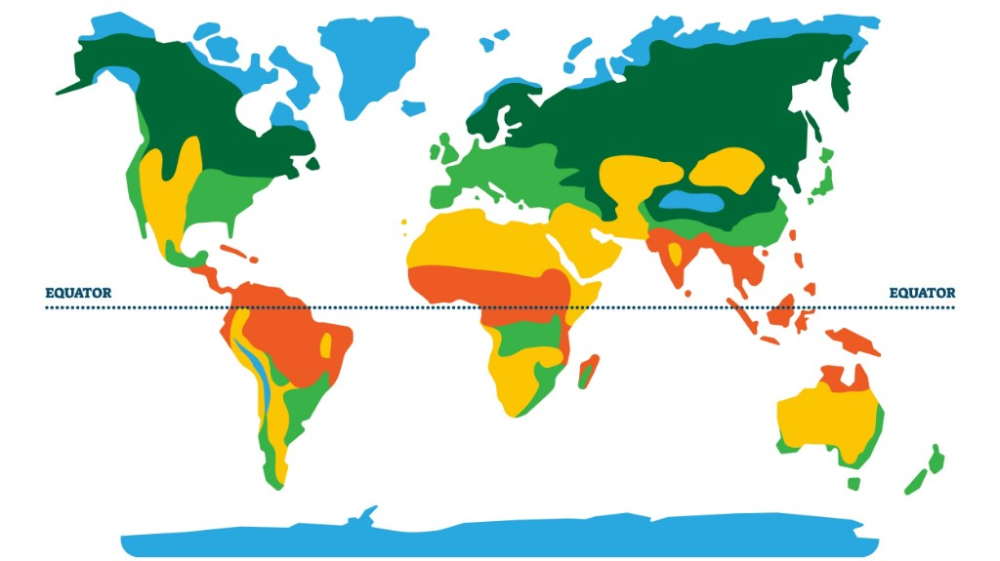
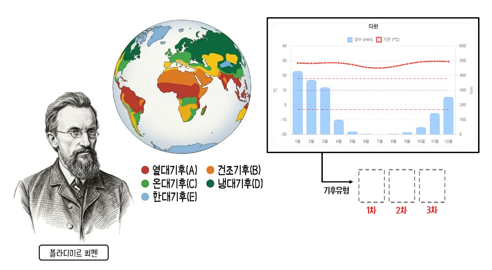
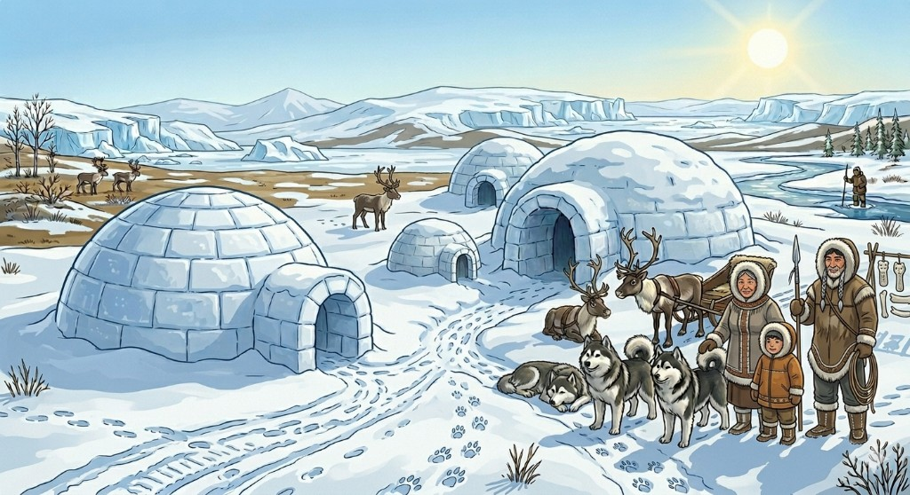

열대
적도 저기압대와 대류로 연중 고온. Af(우림)·Am(몬순)·Aw(사바나) 등 강수 패턴별로 경관이 갈립니다. 카드를 누르면 그래프와 인간 생활을 볼 수 있어요.
무단 배포·복제·상업적 이용 금지 | ⓒ 어나더 지오엑스(Geo-Ex) v.1.0
제작: 경기 이솔고등학교 교사 이왕혁 | 문의: wanyeok96@gmail.com
당신의 지리 루틴을 만들어줄, 또 하나의 지리 학습 도구
Exercise to be an expert — world climate master
쾨펜 기후 구분을 지도와 카드로 살펴봅니다. 아래 지도에서 색으로 구분된 기후대 분포를 확인한 뒤, 카드를 눌러 세부 내용을 열 수 있습니다.

적도 저기압대와 대류로 연중 고온. Af(우림)·Am(몬순)·Aw(사바나) 등 강수 패턴별로 경관이 갈립니다. 카드를 누르면 그래프와 인간 생활을 볼 수 있어요.
증발이 강수를 넘는 환경입니다. BWh·BWk 사막과 BSh·BSk 스텝 등으로 나뉩니다. 카드를 누르면 카이로·울란바토르 그래프와 건조 지역의 생활 모습을 볼 수 있어요.
편서풍·전선과 해양·대륙의 차이로 사계가 분명합니다. Cfb·Cfa·Cs·Cw 등 해양성·몬순·지중해형이 대표적입니다. 카드를 누르면 런던·로마·서울·도쿄 그래프와 인간 생활을 볼 수 있어요.
최한월이 매우 낮고 적설·동토가 흔합니다. 침엽수림(타이가)이 넓고 Df·Dw 등으로 강수 계절이 갈립니다. 카드를 누르면 모스크바·블라디보스토크 그래프와 인간 생활을 볼 수 있어요.
극고위도의 저온과 눈·얼음의 높은 반사율. ET(툰드라)·EF(빙설) 등 짧거나 없는 무설기가 특징입니다. 카드를 누르면 배로·보스토크 그래프와 인간 생활을 볼 수 있어요.
쾨펜의 기후 구분으로 전체 그림을 잡고, 이어서 구분 기준을 익한 뒤 연습하기에서 그래프로 적용해 봅니다.

어나더 세계지리 2단원 학습지(배포용) 2쪽 기준
쾨펜 기호는 1차·2차·3차로 나뉘며, 각 단계에서 보는 초점이 다릅니다.
‘기온’과 ‘강수량’ 모두에 초점
‘강수량’에 초점 — 최건월 강수량과 건조 계절
최건월 강수량으로 판단
위 기준으로 f를 붙일 수 없을 때
‘기온’에 초점 — 주로 Cf(Cfa·Cfb)일 때만 실시
| 구분 | 기후·기호 | 1차(대분류) 기준 | 세부 기후 유형 | 2·3차 기호 요약 |
|---|---|---|---|---|
| 수목 기후 | 열대 A | 최한월 평균기온 18℃ 이상 | Af 열대 우림 기후 Am 열대 몬순 기후 Aw 열대 사바나 기후 | f: 연중 습윤 w: 겨울 건조 m: 계절풍(몬순) |
| 온대 C | 최한월 평균기온 −3 ~ 18℃ | Cfa 온난 습윤 기후 Cfb 서안 해양성 기후 Cs 지중해성 기후 Cw 온대 겨울 건조 기후 | f: 습윤 s: 여름 건조 w: 겨울 건조 a: 최난월 22℃ 이상 b: 최난월 22℃ 미만 | |
| 냉대 D | 최한월 −3℃ 미만, 최난월 10℃ 이상 | Df 냉대 습윤 기후 Dw 냉대 겨울 건조 기후 | f: 습윤 w: 겨울 건조 | |
| 무수목 기후 | 한대 E | 최난월 평균기온 10℃ 미만 | ET 툰드라 기후 EF 빙설 기후 | ET: 최난월 0~10℃ EF: 최난월 0℃ 미만 |
| 건조 B | 연 강수량 500mm 미만 | BS 스텝 기후 BW 사막 기후 | BS: 연강수 250~500mm BW: 연강수 250mm 미만 |
※ 교과서·자료에 따라 경계값·표기가 다를 수 있습니다. 본 앱 연습 문제는 그래프·선택지 맥락에 맞춰 풀이합니다.
표준 학습 6도시(싱가포르·다윈·런던·퍼스·서울·로마)를 이 순서대로 풀며 기후 판별의 기본형을 익힙니다. 그래프·그래프분석 수치를 참고한 뒤, 아래 1·2·3차 구분 카드를 순서대로 확정하고 정답 확인하기로 자료 표기와 맞는지 검토해 보세요. (Step 3에서는 유사한 방식으로 직접 조합합니다.)
기온(°C) · 강수(mm) · 기준선(18° / 10° / −3°)
출처: WMO Tokyo Climate Center
그래프의 연간 강수 규모에 맞는 구간을 하나 고르세요.
※ 1차 판단 순서(자료 기준): 고산(H) 표기 → A → E → B → C → D
기호를 고른 뒤 「1차 확정」을 누르세요.
앞자리 알파벳을 판단한 이후 내용이 표시됩니다.
(Cf인 경우에만 판단합니다.)
앞자리 알파벳을 판단한 이후 내용이 표시됩니다.
검토 결과
도시 선택 또는 지도의 점으로 관측 지점을 고른 뒤, 기후그래프·그래프분석·유형판별로 읽어 정답을 확인합니다. 1차 구분에는 고산(H)이 포함됩니다. 3차 구분(a/b)은 Cfa·Cfb일 때만 하며, 그 외는 패스입니다. 기준 복습은 Step 2 연습하기, 스피드 연습은 Step 4입니다.
OpenStreetMap 기반 지도입니다. 마커를 누르면 위의 도시 선택과 그래프가 바뀝니다. 선택한 지점은 파란색으로 강조됩니다.
기온(°C) · 강수(mm) · 기준선(기온 입력 시 18°·−3°·22°, 강수 입력 시 60·30·20mm) · 초록 점 = 내가 읽은 기온
출처: WMO Tokyo Climate Center
그래프의 연간 강수 규모에 맞는 구간을 하나 고르세요.
Q1. 1차 구분 (A~E·고산 H)
Q2. 2차 구분
Q3. 3차 (Cfa·Cfb만 a/b)
정답 판정
기후 유형을 판별해주세요.
200초 안에 그래프만 보고 쾨펜 기호를 고릅니다. Am(몬순), H(고산) 단추가 포함되어 있습니다. 정답마다 점수가 오릅니다. 분석 연습은 Step 3에서 다시 할 수 있어요.
시작을 누르면 타이머와 첫 문제가 나옵니다.
출처: WMO Tokyo Climate Center
일년 내내 뜨거운 여름, 매일 오후 시원하게 쏟아지는 소나기!
열대 우림(싱가포르)
열대 몬순(양곤)
사바나(다윈)
기온 반팔 옷만 챙기세요! 가장 추운 달도 18°C보다 높아서 겨울이 없는 영원한 여름이랍니다.
강수 우산은 필수 아이템! 매일 오후 '스콜'이라는 소나기가 더위를 식혀주러 찾아와요.
비보다 증발량이 더 많아요! 끝없이 펼쳐진 모래 언덕과 오아시스
사막 기후(카이로)
스텝 기후(울란바토르)
기온 낮에는 타오를 듯 뜨겁지만, 밤에는 덜덜 떨릴 정도로 추워요! 하루 동안의 기온 차이가 매우 크답니다.
강수 비가 거의 오지 않아요. 일 년 내내 내리는 비를 다 합쳐도 한 뼘이 안 될 때가 많죠.
사계절이 뚜렷하고 온화한 날씨, 우리가 살기에 가장 좋은 기후예요!
서안 해양성(런던)
지중해성(로마)
온대 겨울 건조(서울)
온난 습윤(도쿄)
기온 봄, 여름, 가을, 겨울의 변화를 뚜렷하게 느낄 수 있어요. 일 년 내내 대체로 따뜻해서 농사짓기에도 딱이죠!
강수 런던처럼 비가 골고루 오는 곳도 있고, 로마처럼 여름이 건조한 곳, 그리고 우리나라와 일본처럼 여름에 비가 집중되는 곳도 있어요.
끝없이 펼쳐진 침엽수림, 추운 겨울을 견디며 지혜롭게 살아가요.
냉대 습윤(모스크바)
냉대 겨울 건조(블라디보스토크)
기온 겨울이 아주 길고 추워요! 1년 중 가장 추운 달은 영하로 내려가지만, 여름에는 기온이 꽤 올라 농사를 짓기도 해요.
강수 겨울에는 주로 눈이 내려 쌓여요. 강수량은 적은 편이지만, 여름에는 기온이 올라가면서 비가 집중되기도 한답니다.
일 년 내내 꽁꽁 얼어붙은 땅, 영구 동토층 위에서도 삶은 계속됩니다.
툰드라 기후(배로우)
빙설 기후(보스토크)
기온 가장 따뜻한 달도 10도가 넘지 않아요. 땅속이 1년 내내 얼어 있는 영구 동토층이 나타나기도 합니다.
강수 비보다는 눈이 내리지만, 공기가 너무 차가워 습기가 적기 때문에 강수량 자체는 매우 적어요.
